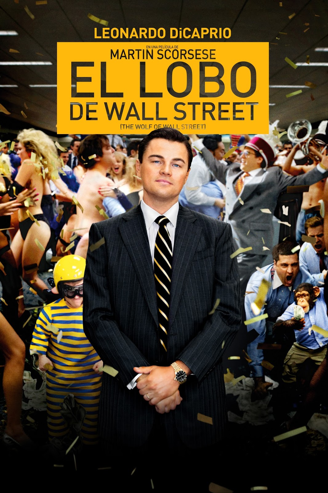

El lobo de Wall Street
Personajes:
- Jordan Belfort
- Donnie Azoff
- Naomi Lapaglia
- Manny Riskin
Sinopsis:
Basada en la historia real de Jordan Belfort, desde su ascenso a la riqueza como corredor de bolsa hasta su caída por el crimen y la corrupción.